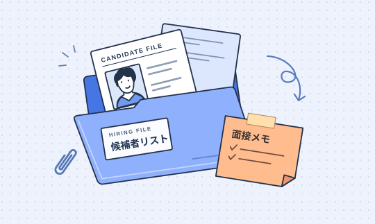

BOARD DEMO
選考ボード
候補者カードを開いて、次の選考に進めてみましょう。
サンプルデータを使用しています。変更は保存されません。
デスクの使い方
- カードを開く
- 担当職種と直近のメモを見て、誰にどんな連絡が必要か確かめます。
- 次の担当へ渡す
- 確認が済んだら次の選考へ。カードが隣の列に移り、次の対応が表示されます。
よくある質問
実際の候補者の情報を使いますか？
いいえ。表示する氏名・職種・メモはすべて架空です。個人情報の入力は不要です。
操作するとメールが送られますか？
メールの送信や外部との通信はありません。ページを再読み込みすると、ボードは初期状態に戻ります。